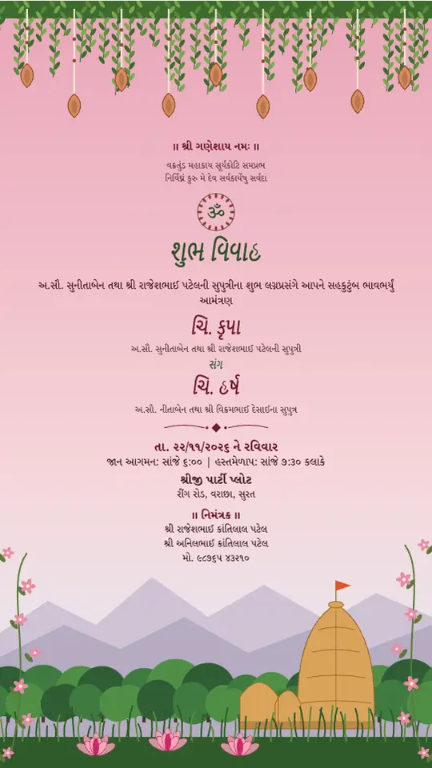
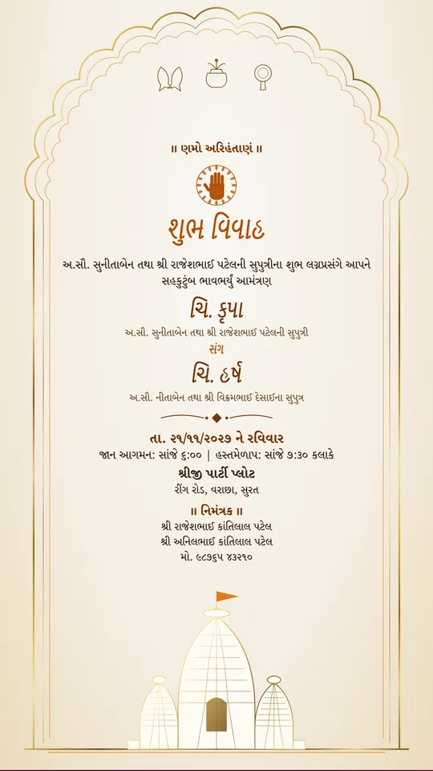

Gujarati · Hindi · Marathi · Punjabi · Tamil
Gujarati invitations and kankotri designs
A Gujarati wedding invitation is called a kankotri (કંકોત્રી), and it follows an order relatives expect: ॥ શ્રી ગણેશાય નમઃ ॥ or the family's own invocation at the top, the hosts' line, the couple written as ચિ. with their parents, the jaan arrival and hastmelap times, the માંગલિક અવસરો before the wedding, a formal letter, the નિમંત્રક and the family names, and the ટહુકો, a short verse from the children of the house. The other functions have their own Gujarati names too: Gol Dhana for the engagement and Pithi for the Haldi.
The designs below are the ones whose sample text is written in Gujarati, grouped by ceremony. The wedding cards are full six-page kankotris; the others are a single card. Any of them can be switched to English, Hindi, Marathi, Punjabi or Tamil in the editor, and any other design can be switched to Gujarati, which fills it with the Gujarati sample wording.
You do not need a Gujarati keyboard. With phonetic typing on, type names in English letters (krupa, harsh, rajeshbhai) and the editor turns each word into Gujarati script as you type. Press Esc to keep a word in English.
For the wording itself, read Gujarati kankotri wording and how a Gujarati kankotri is laid out.
Save the Date

Bandhani Festive Invite
Save the Date · Lord Ganesha
Red bandhani dots, the tie-dye of the gharchola and the wedding chunri, on a card that reads like a small kankotri. Its Gujarati sample ends with કંકોત્રી હવે પછી, telling guests the full kankotri will follow.

Uttarayan Kite Festival
Save the Date · Lord Ganesha
Built around Uttarayan, the January kite festival, with a diamond kite and old-city pol rooftops along the bottom. A good save-the-date for a winter wedding in an Ahmedabad or Surat family.
Ring Ceremony

Gol Dhana Brass Thali
Ring Ceremony · Lord Ganesha
Named after Gol Dhana, the jaggery and coriander seeds shared to seal a Gujarati engagement, with a brass thali on a chocolate brown card. The sample is headed સગાઈ સમારંભ.
Haldi

Pithi Mirror Work
Haldi · Lord Ganesha
Pithi is the Gujarati Haldi, and the mirror-dot border and half mandala recall Kutchi embroidery. The sample under પીઠી પ્રસંગ reads પીઠીના મંગલ પ્રસંગે પધારશોજી.
Sangeet

Garba Raas Night
Sangeet · Lord Ganesha
For the raas garba night many Gujarati families hold before the wedding, with lanterns, a garbo and dandiya sticks. The sample invites guests to સંગીત અને ગરબાની રંગત.
Wedding (Vivah)

Sandhya Pink Dusk Kankotri
Wedding (Vivah) · Lord Ganesha, Shiv-Parvati, Gel Mataji, Swaminarayan
A painted six-page kankotri in pink dusk tones, with Shiv and Parvati on the cover and a baraat and a doli inside, set in Hind Vadodara like the printed original. Two inner pages carry painted lines to Gel Mataji and Swaminarayan, so check them before you choose it.

Gulabi Kankotri
Wedding (Vivah) · Lord Ganesha
The full kankotri order in Gujarati, from the Ganesha shlok to the નિમંત્રક, the ટહુકો and the family names, on a soft pink card with a drawn temple and lotuses. A lighter choice than red and gold that still reads like a printed kankotri.

Jain Lagna Patrika Saffron
Wedding (Vivah) · Jain (Ahimsa hand)
For Gujarati Jain families: it opens with ણમો અરિહંતાણં, uses the Ahimsa hand in place of a Ganesha emblem, and has a white marble shikhar under a cusped arch. All six kankotri pages are included.

Parsi Lagan Pastel Chalk
Wedding (Vivah) · Floral, no deity
Parsi families have long written their wedding cards in Gujarati, and this one adds the pastel colours and chalk rangoli patterns of a Parsi celebration. It has no religious line.
Looking for another ceremony or language? See every design by ceremony.